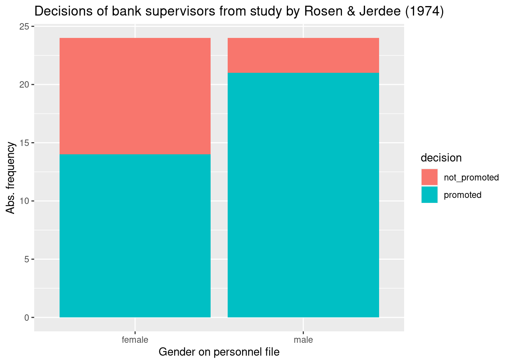

8 Hypothesis tests versus effect size estimation
- Explain the idea behind simulation-based hypothesis tests
-
Calculate hypothesis tests with
infer - Explain the difference between a test and an effect size estimation
In chapter 7 we learned how to calculate confidence intervals, a range of plausible values. Or more formally, an interval that expect to contain the true population parameters in about 95% of the time, if we repeat the sampling very often. In this chapter, we will learn what hypothesis tests are and why it is often better to estimate effect sizes.
8.1 Hypothesis tests with infer
Let’s start with an old study that was done in the 1970. Rosen and Jerdee (1974) analysed whether “sex role stereotypes [had] an influence on personnel decisions”. In our modern language, they wanted to know whether women are discriminated against in promotion decisions. They asked 95 bank supervisors to decide based on a personnel file only whether a person should be promoted or not. All files were identical except the gender and the files were distributed randomly to the participants. Because of this random assignment of files, the procedure is an experiment, and we can draw conclusions about the research question. Here, we look at one part of the data, namely promotion decision for a simple job (c.f. the original publication for more details.)
study <- tibble('gender' = c(rep('male', 24),
rep('female', 24)),
'decision' = c(rep('promoted', 21),
rep('not_promoted', 3),
rep('promoted', 14),
rep('not_promoted', 10)))
study %>%
table() %>%
addmargins() %>%
kable()| not_promoted | promoted | Sum | |
|---|---|---|---|
| female | 10 | 14 | 24 |
| male | 3 | 21 | 24 |
| Sum | 13 | 35 | 48 |
Let’s plot the data before we analyse it.
ggplot(study, aes(x = gender, fill = decision)) +
geom_bar() +
labs(x = 'Gender on personnel file', y = 'Abs. frequency',
title = 'Decisions of bank supervisors from study by Rosen & Jerdee (1974)')
How large is the difference of proportions in promotions between men and women? Is this difference due to chance, or are women discriminated against?
A hypothesis test helps to decide whether an observed effect, in our case the difference in proportions of promotions, can be attributed to chance. In a hypothesis test, two different statements are contrasted, a null hypothesis and an alternative hypothesis:
- Statement 1: There is no real difference, the observed difference is due to chance.
H\(_0\): Null hypothesis. The variables gender and decision are independent; the observed difference in promotions is random.
- Statement 2: Women are discriminated against.
H\(_A\): Alternative hypothesis. The variables gender and decision are dependent. Women are discriminated against in decisions about promotion.
We will use a general framework in the package infer for hypothesis tests. It offers a state-of-the-art simulation-based approach and is based on the following steps (Figure 8.1):
specify()variables or relationships between themhypothesize()define the null hypothesisgenerate()generate data under the null hypothesiscalculate()the sampling distribution under the null hypothesisvisualize()visualize the sampling distribution under the null hypothesis
Two additional functions, shade_p_value and get_p_value visualize and calculate the \(p\) value (see below for definition), respectively.

Figure 8.1: General framework in infer. (Source: https://infer.netlify.app/).
Let’s proceed step by step. First, we calculate the observed difference from our data using infer. The parameter order = c("male", "female") tells us that we calculate the difference as male - female.
prop_hat <- study %>%
specify(formula = decision ~ gender, success = "promoted") %>%
calculate(stat = "diff in props", order = c("male", "female"))
prop_hat## Response: decision (factor)
## Explanatory: gender (factor)
## # A tibble: 1 × 1
## stat
## <dbl>
## 1 0.292We observe 29.2% less women promoted than men.
Let’s see whether this difference can be attributed to chance. We generate data under the null hypothesis, i.e. a world where gender and decision to promote are completely independent. Then we compare the data we obtain in this world with the observed 29.2% difference between men and women.
We generate the data under the null hypotheses by permutation. It means that if gender and decision are unrelated, then we could have observed other combinations of them. Therefore, any permuted combination would be in agreement with the null hypothesis of independence of these variables. We generate 10000 permuted samples.
set.seed(123)
null_distn <- study %>%
specify(formula = decision ~ gender, success = "promoted") %>%
hypothesize(null = "independence") %>%
generate(reps = 10000) %>%
calculate(stat = "diff in props", order = c("male", "female"))## Setting `type = "permute"` in `generate()`.## Response: decision (factor)
## Explanatory: gender (factor)
## Null Hypothesis: independence
## # A tibble: 10,000 × 2
## replicate stat
## <int> <dbl>
## 1 1 0.125
## 2 2 0.292
## 3 3 -0.0417
## 4 4 -0.0417
## 5 5 -0.125
## 6 6 -0.0417
## 7 7 0.0417
## 8 8 0.0417
## 9 9 0.0417
## 10 10 0.0417
## # ℹ 9,990 more rowsThe object null_distn contains 10000 differences in proportions of promotion from the permuted data. We can visualize their distribution and highlight the observed difference to compare. The parameter direction = "greater" defines the alternative hypothesis that women are discriminated against, i.e. the difference is larger than zero. The function shade_p_value shades values that are larger than the observed statistics. The red bar shows the observed statistic itself.

The \(p\) value is the probability to obtain data as extreme or more extreme than what has been observed, if the null hypothesis is true.
The \(p\) value in our example equals
## # A tibble: 1 × 1
## p_value
## <dbl>
## 1 0.0268This \(p\) value is really small. It is rare to observe a difference as large as 29.2%, if we assume that women and men are promoted equally often. We reject the null hypothesis of independence and conclude that women are discriminated against in promotion. A cautionary note: In this experiment, we assumed that the participating bank supervisors were representative for their profession in the 1970s. Thus, it is more cautious to conclude that women were discriminated against in the 1970 (provided the white male bank supervisors are representative for the then-population of decision-makers).
8.2 There is only one test!
When you read through literature, you will find many tests. It is difficult to keep all those names and remember when to use what. The good news is that it is unnecessarily complicated and can be simplified with a test procedure based on computer simulations as we did in infer. The general logic behind simulation-based tests is shown in Figure 8.2.

Figure 8.2: General logic behind any simulation-based hypothesis test. (Source: http://allendowney.blogspot.com/2016/06/there-is-still-only-one-test.html. Used with permission by the author Prof. Allen Downey).
The test procedure is based on the same steps, regardless which test you want to apply.
Step 1: calculate the test statistic in your data Summarize your data with a test statistic. It can be a mean or a difference in proportions. In Figure 8.2 this statistic is called \(\sigma*\).
Step 2: formulate the null hypothesis Think about your research question. What do you want to know? Derive a model of a world where this effect is absent. This is your null hypothesis, \(H_0\). This model can be a permutation of variables or a theoretical model or a complicated model 😄.
Step 3: generate the data under the null hypothesis Generate the data, i.e. many data samples, using your model of \(H_0\) and calculate the same statistic as you did for your observed data for each of those samples.
Step 4: calculate the sampling distribution These statistics under the null give you a sampling distribution that you can visualize. Additionally, visualize the observed statistic \(\sigma*\) and compare. Does such a value often appear in your sampling distribution or is it rare? The \(p\) value gives you the frequency of how often the sampling distribution has values that are at least as large as your \(\sigma*\).
Step 5: Decide! Is the \(p\) values small? Use your domain knowledge to frame the result. No need to refer to statistical significance here! Formulate a conclusion in plain language. Think about how you obtained the data. There is always uncertainty, so be modest and do not overstate your finding!
There is so much more to say about the misuse of \(p\) values and the term “statistical significance”. A good starting point is the paper by Wasserstein, Schirm, and Lazar (2019).
8.3 Hypothesis test versus effect size estimation
Compared to a statistical test, the estimation of a so-called effect size can be much more interesting. Effect size can be the difference in means or proportions or more elaborated (standardized) effects. While a statistical test gives you a “feeling” of whether the observed effect could be attributed to chance, estimation of the effect size and its confidence intervals gives you a range of plausible values. It is much more interesting and relevant to discuss those and what they could mean for real life than just to state that something is (not) due chance. Prefer effect size and confidence intervals where possible to hypothesis tests.
8.4 Practice on your own!
Does the travel time and the time spent in the library correlate in our getsmarter population? Do a statistical test based on a survey of 200 students. Formulate the null and alternative hypothesis before doing the test. Hint:
specify(travel_time ~ time_lib)andcalculate(stat = "correlation"). Consult the website of the libraryinfer(c.f. below).Does the travel time and the time spent in the library correlate in our getsmarter population? This time, estimate the correlation and calculate its confidence interval. Compare with the hypothesis test.
8.5 Reading assignment
Chapter 9 in Ismay and Kim (2021)
8.6 Additional resources
Webpage of infer: https://infer.netlify.app/
Great talk by the author of infer.